UX Writing 원칙
IBK UX Writing 핵심 역할
고객이 금융 정보를 쉽게 이해하고,
상황에 맞게 판단하며,
다음 행동을 명확히 알 수 있도록 돕습니다.
IBK UX Writing 원칙
쉽고 일관되게 쓰기
정보를 쉽고 일관되게 전달해 고객이 상황을 이해할 수 있게합니다.
- 어려운 금융 정보를 고객 언어로 풀어 씁니다.
- 같은 의미는 같은 표현으로 씁니다.
판단을 돕는 정보 제공하기
고객의 상황에 맞는 정보를 제공해 스스로 판단할 수 있도록 합니다.
- 필수 문구는 이해하기 쉽게 보완합니다.
- 선택에 영향을 주는 핵심 정보를 문장 앞에 씁니다.
명확히 안내하기
절차와 결과를 명확히, 오류는 원인과 해결까지 안내합니다.
- 화면의 절차와 진행 상태를 문구로 명시합니다.
- 오류는 원인과 해결 방법을 함께 안내합니다.
상황에 맞게 전달하기
상황에 맞게 정보의 구조와 양을 조절합니다.
- 고객과 과업 맥락에 맞춰 정보 밀도를 조절합니다.
- 채널에 맞는 구조로 작성합니다.
- 채널에 맞게 정보의 양과 길이를 조절합니다.
쉽고 일관되게 쓰기
IBK기업은행은 고객이 바로 이해할 수 있게 직관적으로 표현합니다.
고객에게 익숙한 표현은 유지하고, 어려운 용어는 고객의 언어로 쉽게 풀어 씁니다. 같은 기능과 행동은 화면과 업무가 달라도 일관되게 표현합니다.
왜 이 원칙이 중요할까요?
어려운 금융 용어와 복잡한 문장은 직관적으로 이해되지 않고, 판단과 행동을 늦춥니다. 쉽게 풀어 쓴 문구는 고객의 과업 완료율을 높입니다[1].
화면마다 다른 표현이 쓰이면 고객은 같은 서비스 안에서도 혼란을 느낍니다. 일관된 용어와 구조가 IBK 서비스 전체의 신뢰를 만듭니다[2].
어려운 금융 정보를 고객 언어로 풀어 씁니다.
-
전문용어는 쉬운 말로 풀어 씁니다
고객은 익숙한 언어일 때 의미를 정확히 받아들이므로 전문용어는 쉬운 단어로 바꾸고, 바꾸기 어려운 용어는 의미를 함께 안내합니다.
금융 전문용어는 고객이 익숙하게 이해하는 표현으로 풀어야 정확히 전달됩니다[1]. -
복잡한 절차는 한 번에 하나씩 설명합니다
사용자는 화면을 훑어 읽기 때문에, 복잡한 절차와 조건은 한 문장에 하나씩 짧고 평이하게 풀어 씁니다.
복잡한 정보와 기능은 한 번에 보여주기 보다는, 필요한 시점에 나눠 보여 줄 때 학습과 오류 부담이 줄어듭니다[3]. -
숫자는 고객의 관점에서 보여줍니다
숫자가 구체적으로 설명되어야 고객이 판단할 수 있으므로 금액, 수수료, 기간은 체감할 수 있는 단위와 비교로 표현합니다.
금융 정보를 다루는 순간일수록 고객은 어려운 말이 아닌 명확한 설명에서 신뢰를 느낍니다[4]. -
고객에게 미치는 영향을 함께 알려줍니다
고객은 '나에게 미치는 영향'을 알아야 판단하므로, 상품 조건이나 제도가 거래, 금액, 기한에 어떤 영향을 주는지 함께 안내합니다.
고객은 제도의 작동 원리보다 '그래서 나에게 어떤 실질적인 결과가 발생하는지'를 먼저 알고 싶어 합니다[5].
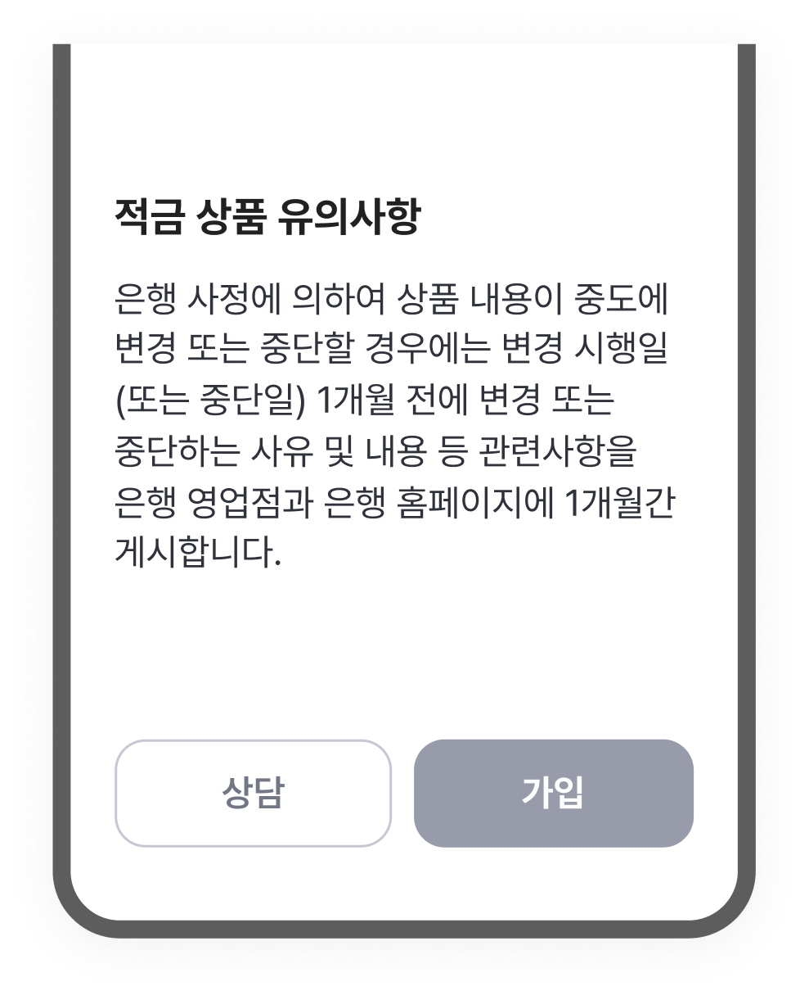
'변경 시행일' 등 행정 용어가 그대로 노출되어
고객이 의미를 파악하기 어려움
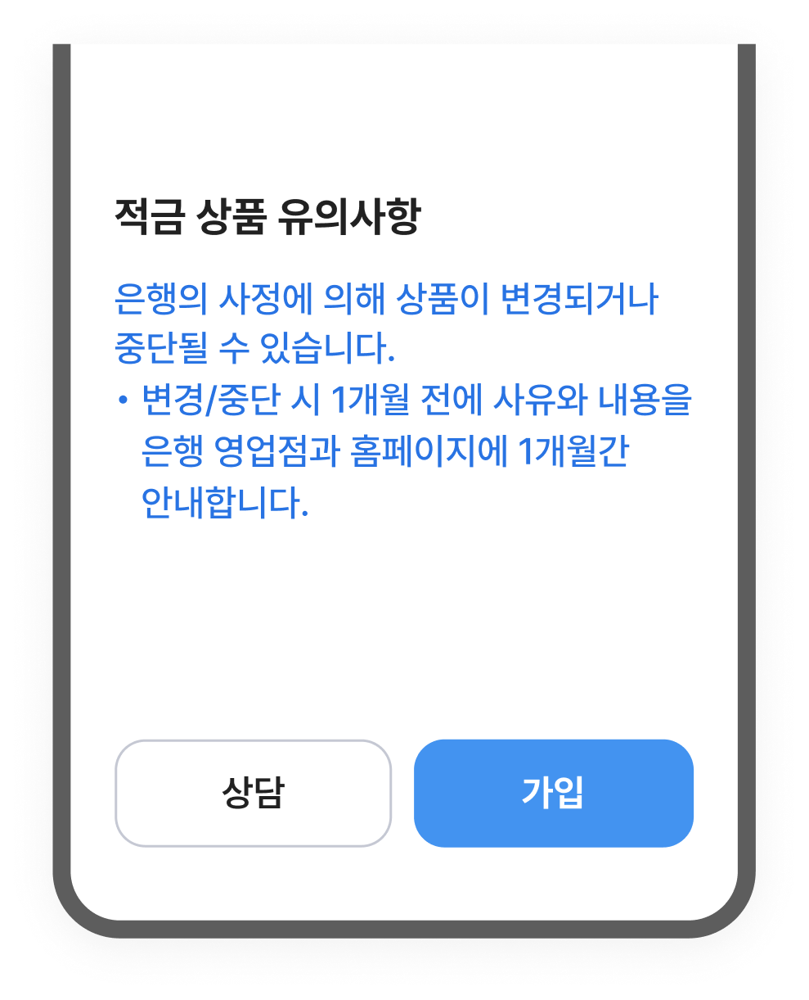
내부 중심 용어를 고객이 익숙한 표현으로 풀어 써
별도 해석 없이 바로 이해 가능
같은 의미는 같은 표현으로 씁니다.
-
같은 기능, 상태, 행동은 같은 용어로 표현합니다.
일관적 이해를 위해 버튼명, 메뉴명, 상태명처럼 반복되는 표현은 한 가지 용어로 통일합니다.
같은 단어와 표현을 일관되게 사용하면 고객은 서비스를 더 쉽게 학습하고 예측 가능하게 이해할 수 있습니다[6]. -
비슷한 표현은 의미 차이를 먼저 정리합니다.
신청, 가입, 등록, 개설, 실행처럼 혼용되기 쉬운 표현은 업무 단계와 의미에 따라 사용 범위를 구분합니다.
표현이 달라지면 사용자는 의미 차이를 다시 추론해야 합니다[6]. -
종결어미와 문장 구조를 통일합니다
어미와 구조가 달라지면 다른 서비스처럼 느껴지므로, 같은 상황의 안내는 동일한 어미와 구조로 작성합니다.
문장의 어미와 구조를 일관되게 설계하면 사용자는 새로운 문장 구조를 해석할 필요 없이 기능에만 집중할 수 있습니다[7]. -
숫자, 날짜, 금액 표기를 통일합니다
표기 방식이 섞이면 같은 정보도 다르게 보이므로 숫자, 날짜, 금액, 단위는 한 가지 형식으로 표기합니다.
표기 형식이 직관적이고 일관되면 텍스트의 시각적 노이즈가 줄어들어, 고객이 핵심 정보를 훨씬 빠르게 훑어볼 수 있습니다[8].

같은 이체 기능임에도 버튼이 '이체'와 '보내기'로 혼용되어
고객이 동일한 기능으로 인식하기 어려움
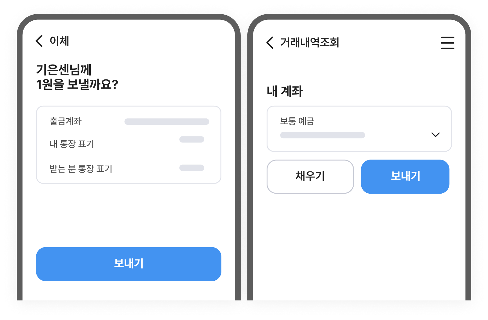
'보내기'로 통일해 같은 기능은 어느 화면에서든
동일한 표현으로 일관되게 전달
작성 전 확인 포인트
핵심이 먼저 보이고, 누구나 이해할 수 있는지 살펴봅니다.
- 전문용어, 내부 용어를 고객의 말로 쉽게 풀어썼나요?
- 절차를 나눠서 설명하고 있나요?
- 금융 지식이 없는 사람도 바로 이해할 수 있는 표현인가요?
- 같은 기능, 상태, 행동, 표기 방식은 같은 방식으로 통일했나요?
- [1] U.S. Securities and Exchange Commission. (1998). A Plain English Handbook: How to Create Clear SEC Disclosure Documents. SEC.
- [2] Shneiderman, B., Plaisant, C., Cohen, M., Jacobs, S., Elmqvist, N., & Diakopoulos, N. (2016). Designing the User Interface: Strategies for Effective Human-Computer Interaction (6th ed.). Pearson.
- [3] Nielsen, J. (2006). Progressive Disclosure. Nielsen Norman Group.
- [4] Budiu, R. (2016, February 14). *The pyramid of trust*. Nielsen Norman Group. https://www.nngroup.com/articles/trust-pyramid/
- [5] Winters, S. (2017). Content design. Content Design London.
- [6] Nielsen Norman Group. (2021). Maintain Consistency and Adhere to Standards. Nielsen Norman Group.
- [7] Podmajersky, T. (2019). Strategic writing for UX: Drive engagement, conversion, and retention with every word. O'Reilly Media.
- [8] Nielsen, J. (2007). Show Numbers as Numerals When Writing for Online Readers. Nielsen Norman Group.
판단을 돕는 정보 제공하기
IBK기업은행은 고객이 스스로 선택할 수 있도록 필요한 정보를 먼저 제공합니다.
핵심 정보는 앞에 배치하고, 고객의 이익과 유의할 점을 함께 안내합니다. 필수 고지는 유지하되, 과업의 목적과 리스크 수준에 따라 설명의 양을 조절합니다.
왜 이 원칙이 중요할까요?
고객 유형에 따라 화면에서 원하는 정보와 처리 방식이 다릅니다. 고객 유형에 맞게 문구를 조절하면 불필요한 이탈과 문의를 줄일 수 있습니다[1].
단순 조회와 대출, 해지는 고객이 감수해야 할 리스크가 다릅니다. 화면에 맞게 설명량을 조절하면 중요한 정보가 묻히지 않고 고객의 판단을 도울 수 있습니다[2].
약관, 고지 문구는 임의로 바꾸기 어렵지만 보조 설명을 더하면 고객이 스스로 해석하지 않아도 핵심을 이해하고 판단할 수 있습니다[3].
필수 문구는 이해하기 쉽게 보완합니다.
-
원문 유지가 필요한 문구는 임의로 바꾸지 않습니다.
약관, 고지, 법적 문구처럼 승인된 표현은 그대로 유지하고, 고객이 확인해야 할 핵심만 안내로 보완합니다.
금융 공시는 내용을 삭제하는 것이 아니라 고객이 이해할 수 있도록 명확하게 조직화해야 합니다[3]. -
문구의 수정 가능 범위를 먼저 구분합니다.
원문 유지, 제한적 변형, 보조 설명, 준법 검토 필요 영역을 구분해 문구별로 적용 방식을 다르게 정합니다.
-
필수 고지는 요약문구와 도움말로 이해를 보완합니다.
원문을 유지하되 핵심 조건, 예외, 주의사항은 요약문구, 괄호 설명, 툴팁, 도움말로 함께 안내합니다.
복잡한 의무 고지는 이해와 의사결정을 방해할 수 있으므로, 이해 가능한 형태로 보완해야 합니다[4].

원문만 단독 노출되어 고객이 왜 이 정보가
필요한지, 어디에 쓰이는지 알 수 없음

원문을 유지하되 보조 설명을 추가해
동의 목적과 범위를 바로 파악 가능
선택에 영향을 주는 핵심 정보를 문장 앞에 씁니다.
-
고객의 선택에 영향을 주는 결과와 조건을 먼저 제공합니다.
고객은 화면을 빠르게 훑어보며 필요한 정보를 찾기 때문에, 의미와 다음 행동을 판단할 수 있는 핵심 정보를 앞에 배치합니다.
사용자는 웹/앱 화면을 정독하지 않고 F자 또는 Z자 형태로 스캔하며, 첫 문장과 좌측 상단에서 페이지의 가치를 판단합니다[5]. -
금액, 기한, 조건은 문장 앞에 배치합니다.
금액, 기한, 조건은 금융 의사결정의 기준이므로, 문장 앞에 배치해 고객이 혼란 없이 빠르게 판단하도록 돕습니다.
중요한 정보를 먼저 보여주고, 세부 정보를 뒤로 보내는 'Inverted Pyramid' 구조가 디지털 텍스트 이해도를 높입니다[6].
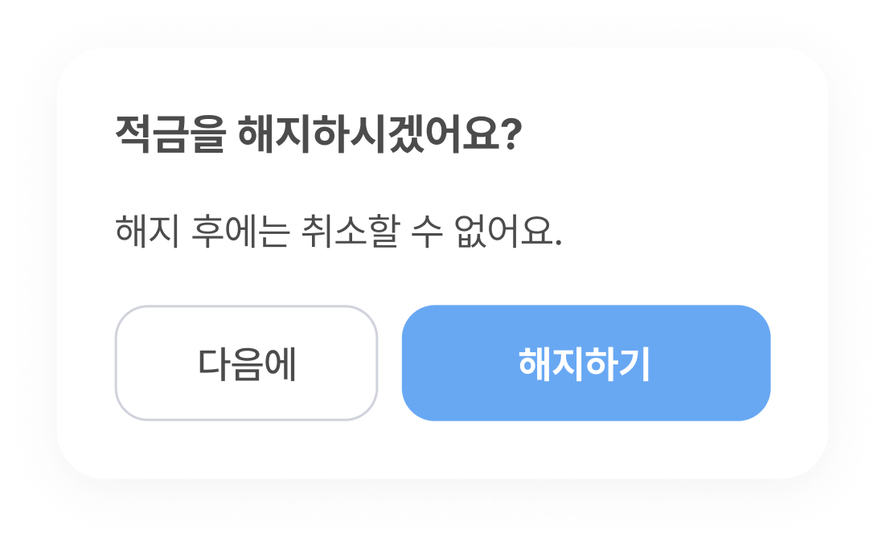
핵심 조건 없이 행동만 요청해
고객이 결과를 모른 채 진행하게 됨
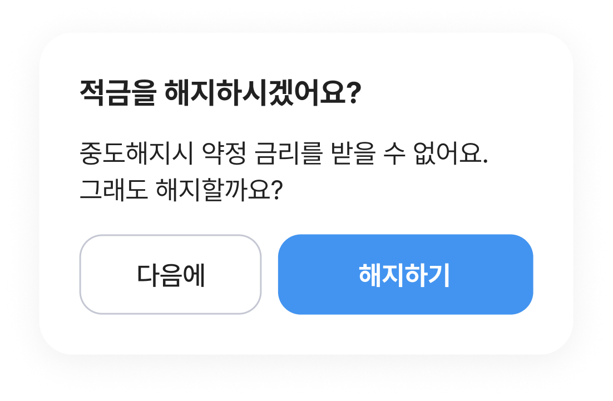
선택에 영향을 주는 조건을 본문 앞에 먼저 써서
고객이 인지한 상태에서 행동 여부를 판단 가능
작성 전 확인 포인트
고객이 필수 내용을 충분히 이해한 상태에서 선택하도록 문구가 작성됐나요?
- 어려운 고지 문구 옆에 쉬운 요약이나 도움말을 함께 제공했나요?
- 약관과 고지 문구를 읽고, 고객이 본인에게 미치는 영향을 이해할 수 있나요?
- 고객이 선택하기 전에 필요한 조건과 결과를 먼저 확인할 수 있나요?
- 금액, 기한, 조건 같은 핵심 정보가 먼저 제시되어 있나요?
- [1] Shneiderman, B., Plaisant, C., Cohen, M., Jacobs, S., Elmqvist, N., & Diakopoulos, N. (2016). Designing the user interface: Strategies for effective human-computer interaction (6th ed.). Pearson.
- [2] Sweller, J. (1988). Cognitive load during problem solving: Effects on learning. Cognitive Science, 12(2), 257–285. https://doi.org/10.1207/s15516709cog1202_4
- [3] U.S. Securities and Exchange Commission. (1998). A plain English handbook: How to create clear SEC disclosure documents. Office of Investor Education and Assistance. https://www.sec.gov/pdf/handbook.pdf
- [4] Ben-Shahar, O., & Schneider, C. E. (2011). The failure of mandated disclosure. University of Pennsylvania Law Review, 159(3), 647–749. https://scholarship.law.upenn.edu/penn_law_review/vol159/iss3/2/
- [5] Nielsen, J. (2006). F-Shaped Pattern For Reading Web Content. Nielsen Norman Group.
- [6] Schade, A. (2018). Inverted Pyramid: Writing for Comprehension. Nielsen Norman Group.
명확히 안내하기
IBK기업은행은 고객이 현재 상태와 다음 행동을 분명히 알 수 있게 안내합니다.
진행 단계와 결과를 먼저 알려 고객이 불안하게 기다리지 않도록 합니다. 오류가 발생하면 원인과 해결 방법을 함께 안내하고, 필요시 대체 경로를 제시합니다.
왜 이 원칙이 중요할까요?
고객이 다음에 할 일을 바로 알 수 있도록 안내합니다. 다음 행동을 구체적으로 제시해 고객이 중간에 멈추지 않고 절차를 완료하도록 돕습니다[1].
현재 단계와 남은 절차를 명확히 안내합니다. 고객이 진행 상황을 바로 알 수 있으면 불안이 줄고, 다음 단계로 자연스럽게 이어갈 수 있습니다[2].
오류 발생 시, 원인과 해결 방법이 함께 안내되면 문제를 해결하고 다시 진행할 수 있습니다. 반복 이탈과 문의를 줄이는 가장 직접적인 방법입니다[1].
화면의 절차와 진행 상태를 문구로 명시합니다.
-
현재 단계와 위치를 먼저 보여줍니다.
사용자가 진행 중인 과업의 단계와 시스템 처리 상태를 먼저 보여줍니다.
시스템이 무엇을 하고 있는지 적절한 시간 안에 보여주는 것은 사용자가 다음 행동을 판단하게 하는 기본 원칙입니다[3]. -
처리 중/완료/대기 상태를 구분해 안내합니다.
접수 완료, 심사 중, 처리 완료, 보류처럼 상태별 의미를 구분하고 기다려야 하는 경우에는 예상 시간이나 알림 방식을 함께 안내합니다.
진행 표시와 상태 안내는 시스템이 처리 중임을 알려주고, 사용자의 불확실성을 줄이는 역할을 합니다[2]. -
다음 절차와 확인 경로를 안내합니다.
현재 단계가 끝난 뒤 이어지는 절차, 고객이 해야 할 행동, 결과를 다시 확인할 수 있는 위치를 함께 안내합니다.
행동은 시작, 중간, 끝이 보이도록 구성해야 하며, 완료 피드백은 사용자가 다음 행동을 준비하도록 돕습니다[4]. -
버튼명, 메뉴명, 준비 사항 등 다음 행동을 구체적으로 안내합니다.
모호한 안내는 과업을 멈추게 하므로, 버튼명, 메뉴명, 준비물, 이동 경로를 제시해 고객이 다음 단계로 이동할 수 있도록 합니다.
다음 행동(CTA)을 구체적으로 제시할 때 사용자의 과업 완료율이 높아집니다[5].
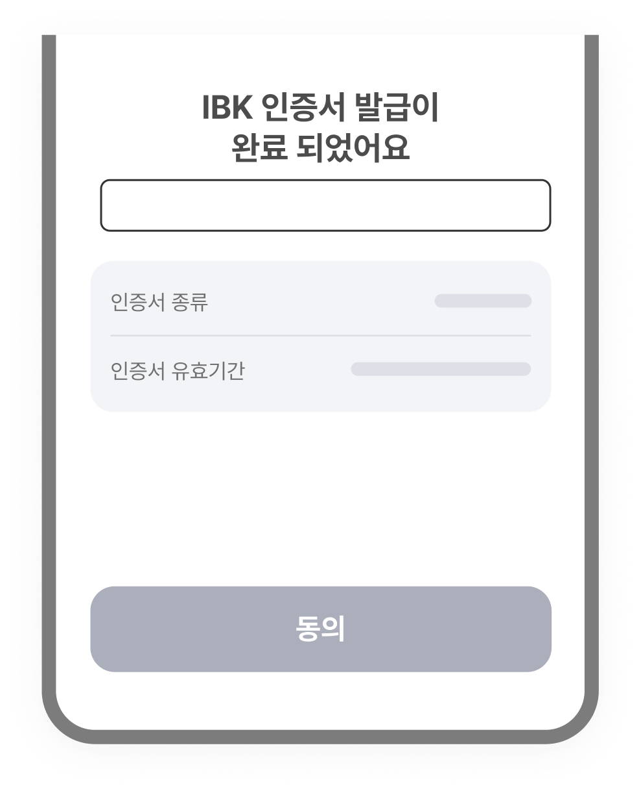
완료 사실만 전달하고 이후 어디서 무엇을 할 수 있는지
안내가 없어 고객이 다음 행동을 스스로 파악해야 함
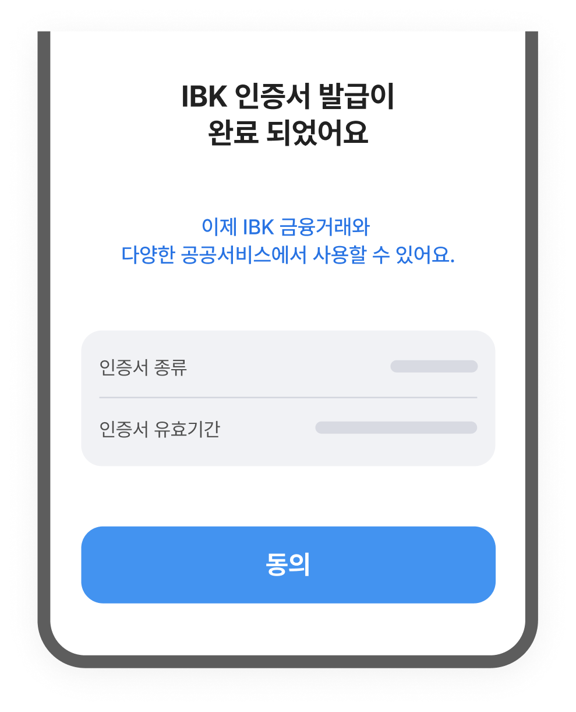
완료 후 사용 가능한 서비스를 함께 안내해
고객이 즉시 다음 행동으로 이어질 수 있도록 안내
오류는 원인과 해결 방법을 함께 안내합니다.
-
오류 상태를 먼저 알려줍니다.
고객이 현재 과업이 실패했는지, 중단됐는지, 다시 시도할 수 있는지 먼저 알 수 있도록 상태를 명확히 안내합니다.
오류 메시지는 사용자가 문제를 이해할 수 있도록 쉬운 말로 설명해야 합니다[6]. -
오류 원인을 시스템 언어가 아닌 고객 언어로 설명합니다.
에러코드나 시스템 사유 대신 입력 정보 불일치, 인증 실패, 조회 기간 초과, 권한 제한처럼 고객이 이해할 수 있는 원인을 설명합니다.
좋은 오류 메시지는 사람이 이해할 수 있는 언어로 문제를 설명합니다[7]. -
해결 행동과 대체 경로를 함께 제시합니다.
확인, 수정할 내용과 눌러야 할 버튼을 안내 해야하며, 즉시 해결이 어렵다면 재시도 시점이나 문의 경로를 함께 제공합니다.
오류 상황에서는 사용자가 전체 과업을 다시 시작하지 않도록 구체적이고 건설적인 복구 지침을 제공해야 합니다[4].
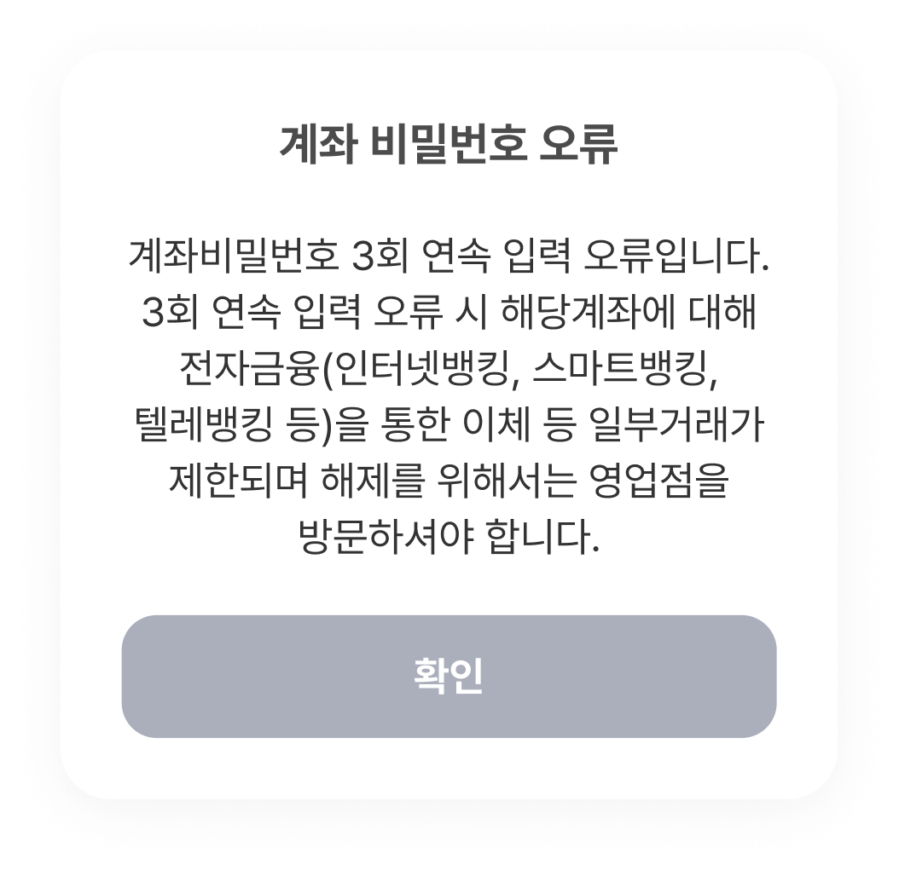
오류 원인, 제한 범위, 해결 방법이 한 문장에 나열되어
고객이 지금 당장 해야 할 행동을 파악하기 어려움
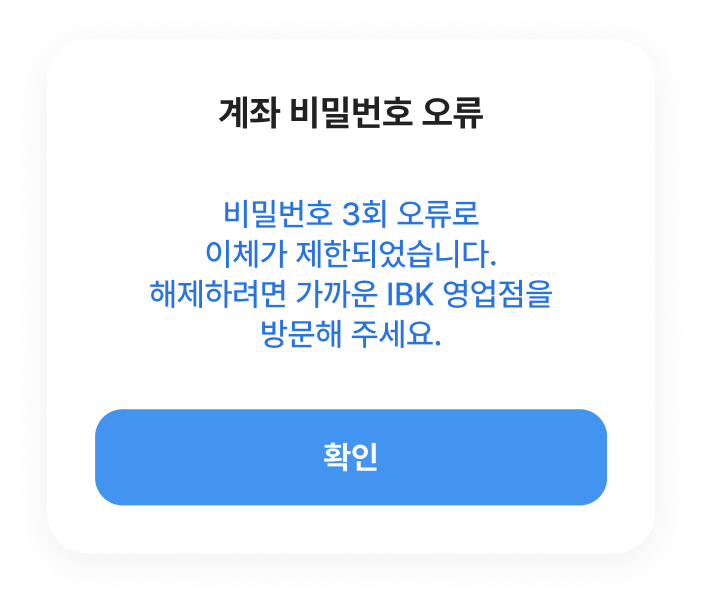
현재 상태, 원인, 해결 행동을 짧은 문장으로 분리해
고객이 즉시 취해야 할 조치를 바로 확인 가능
작성 전 확인 포인트
고객이 다음에 무엇을 해야 하는지, 어떻게 해결할 수 있는지 바로 알 수 있나요?
- 현재 단계와 처리 상태가 고객의 입장에서 한눈에 보이나요?
- 고객이 다음에 해야 할 일을 바로 인지할 수 있나요?
- 오류가 발생한 이유를 문구만 보고 바로 이해할 수 있나요?
- 문제 해결 방법을 바로 확인할 수 있나요?
- [1] Nielsen, J. (1994, April 24). 10 usability heuristics for user interface design. Nielsen Norman Group. https://www.nngroup.com/articles/ten-usability-heuristics/
- [2] Sherwin, K. (2014, October 26). Progress indicators make a slow system less insufferable. Nielsen Norman Group. https://www.nngroup.com/articles/progress-indicators/
- [3] Harley, A. (2018, June 3). Visibility of system status (Usability heuristic #1). Nielsen Norman Group. https://www.nngroup.com/articles/visibility-system-status/
- [4] Shneiderman, B., Plaisant, C., Cohen, M., Jacobs, S., Elmqvist, N., & Diakopoulos, N. (2016). Designing the user interface: Strategies for effective human-computer interaction (6th ed.). Pearson.
- [5] Microsoft. (2021, June 24). Writing style - Windows apps. Microsoft Learn. https://learn.microsoft.com/en-us/windows/apps/design/style/writing-style
- [6] Moran, K. (2019, September 27). Usability heuristic 9: Help users recognize, diagnose, and recover from errors [Video]. Nielsen Norman Group. https://www.nngroup.com/videos/usability-heuristic-recognize-errors/
- [7] Neusesser, T., & Sunwall, E. (2023, May 14). Error-message guidelines. Nielsen Norman Group. https://www.nngroup.com/articles/error-message-guidelines/
상황에 맞게 전달하기
IBK기업은행은 고객이 이용하는 상황과 채널에 맞춰 필요한 정보를 정확하고 알기 쉽게 전달합니다.
채널 특성에 따라 표현 길이와 정보량을 조절하고, 같은 목적의 메시지는 일관된 구조로 제공해 고객이 어떤 채널에서도 쉽게 이해할 수 있도록 합니다.
왜 이 원칙이 중요할까요?
고객의 상황과 채널에 따라 필요한 정보량은 달라집니다.형식에 맞게 정보량을 조절하면 핵심이 잘리지 않고, 필요한 내용이 고객에게 온전히 전달됩니다[1].
알림톡, 푸시, 문자처럼 화면 밖에서 전달되는 메시지는 맥락이 짧습니다. 발신 목적과 해야 할 행동을 첫 문장에 담으면 이해와 행동이 쉬워집니다[2].
작성 부서가 달라도 메시지는 같은 구조로 전달합니다. 공통 구조는 고객 이해를 돕고, 반복 문의를 줄입니다[3].
고객과 과업 맥락에 맞춰 정보 밀도를 조절합니다.
-
반복해서 확인하는 화면에서는 핵심 정보만 간결하게 보여줍니다.
조회, 확인처럼 반복되는 화면에서는 부가 설명을 줄이고 결과 중심으로 안내합니다.
중요한 정보를 먼저 보여주고 추가 정보는 필요할 때 제공하면 학습성과 효율성이 높아집니다[4]. -
개인 고객에게는 이해와 탐색을 돕는 설명을 더합니다.
개인 고객의 정보 비교와 판단을 돕기 위해 상품, 제도의 의미와 조건을 풀어서 안내합니다.
좋은 인터페이스는 초보자에게 충분한 설명을, 숙련자에게 빠른 진행을 함께 제공해야 합니다[5]. -
기업 고객에게는 처리에 필요한 정보를 간결하게 전합니다.
기업 고객은 업무 처리에 집중하므로, 가능 여부, 필요 조건, 처리 절차를 간결하게 안내합니다.
숙련된 사용자에게는 빠른 업무 처리를 위해 간결하게 정보를 제공해야 합니다[5]. -
신중한 판단이 필요한 화면에서는 조건과 영향을 더 자세히 안내합니다.
대출, 해지, 고액 송금처럼 결정 부담이 큰 화면에서는 조건과 결과를 충분히 설명합니다.
작업기억의 용량은 제한되어 있어, 과업과 무관한 정보는 이해를 방해합니다[6].
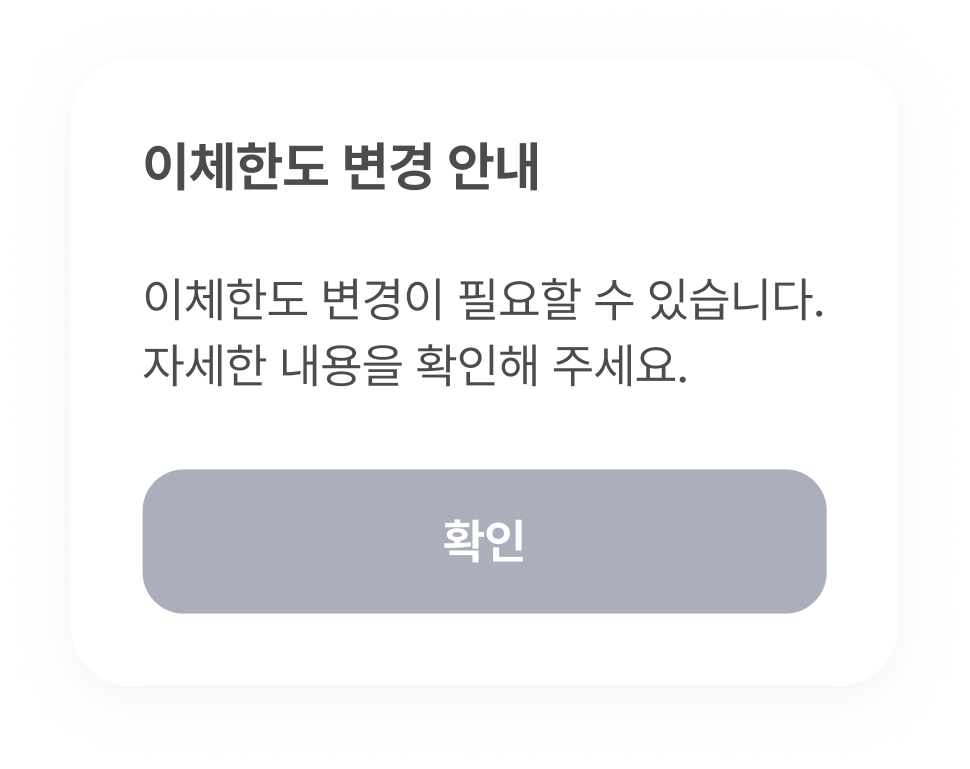
변경 필요성만 안내해, 고객이 왜 바꿔야
하는지와 다음 행동을 판단하기 어려움
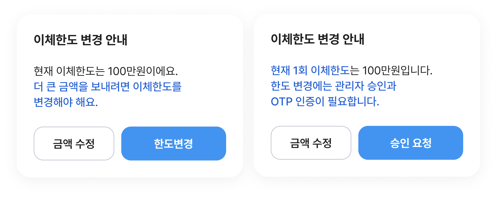
고객 유형에 따라 정보의 깊이를 조절해,
개인 고객은 변경 필요성을 쉽게 이해하고 기업 고객은 처리 조건을 예측할 수 있도록 안내
채널에 맞는 구조로 작성합니다.
-
목적과 주체를 먼저 표시합니다.
‘광고’, ‘안내’ 등 메시지 목적과 ‘IBK기업은행’ 같은 발신 주체는 앞부분에 일관되게 표시합니다.
-
핵심 내용, 조건, 행동 순서로 구성합니다.
무엇을 알리는 메시지인지 먼저 말하고, 금액, 기한, 조건을 정리한 뒤 고객이 해야 할 행동을 안내합니다.
거래성 알림은 필요한 세부정보와 쉬운 선택지를 제공해야 합니다[2]. -
같은 목적의 메시지는 같은 구조로 작성합니다.
상환 안내, 정책 변경, 이벤트, 보안 알림처럼 반복 발송되는 메시지는 공통 구조를 적용해 부서별 표현 차이를 줄입니다.
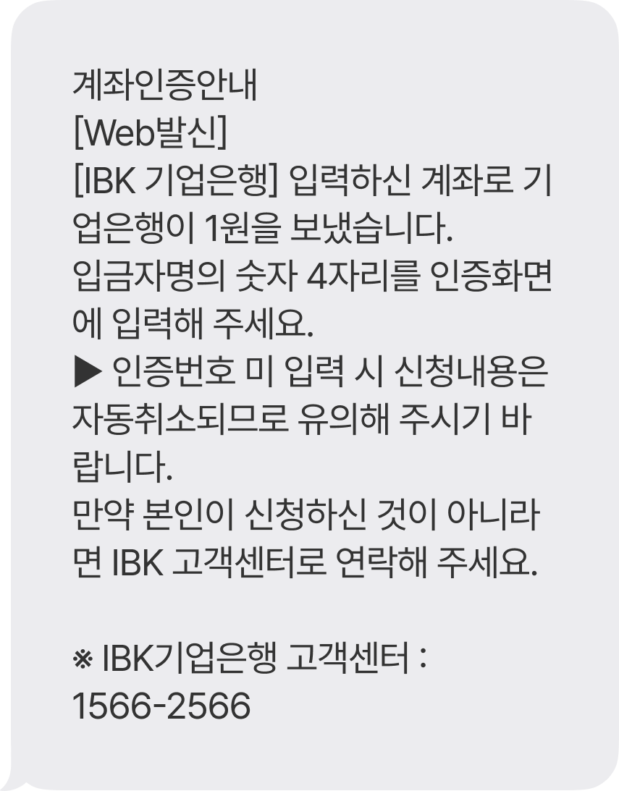
발송 목적과 고객 행동이 본문에 섞여 있어
무엇을 먼저 확인하고 입력해야 하는지 알기 어려움
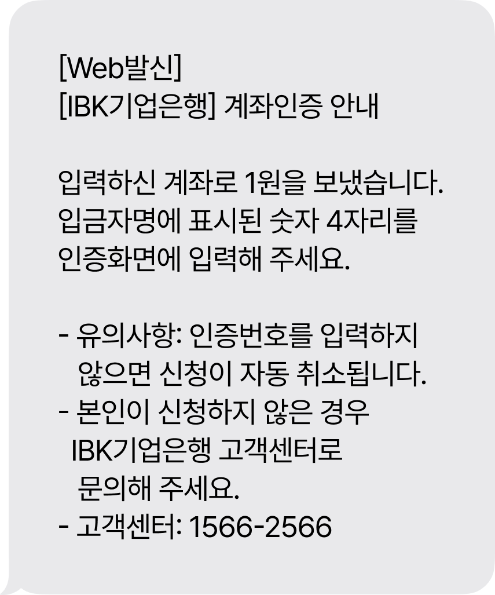
발송 목적, 핵심 내용, 입력할 정보, 유의사항을
순서대로 구분해 고객이 바로 행동 가능
채널에 맞게 정보량과 길이를 조절합니다.
-
제한된 채널에서는 핵심만 남깁니다.
SMS, Push, 알림톡처럼 글자 수와 노출 방식이 제한된 채널에서는 고객이 바로 알아야 할 상태와 행동만 전달합니다.
짧은 메시지는 핵심 가치와 필요한 행동을 간략하게 알려야 합니다[1]. -
첫 줄에 메시지의 목적과 상태를 담습니다.
Push는 제목과 첫 줄, 알림톡과 SMS는 첫 문장에서 메시지를 받은 이유와 핵심 상태를 알 수 있게 씁니다.
거래성 알림은 명확한 제목과 필요한 거래 세부정보를 제공해야 합니다[2]. -
상세 내용은 확인 경로로 연결합니다.
상세 조건이나 반복 설명을 모두 넣기보다, 핵심만 전달하고 앱, 링크, 고객센터 등 확인 가능한 경로로 연결합니다.
짧은 알림은 필요한 정보와 사용자의 선택지를 명확히 제공해야 합니다[2].
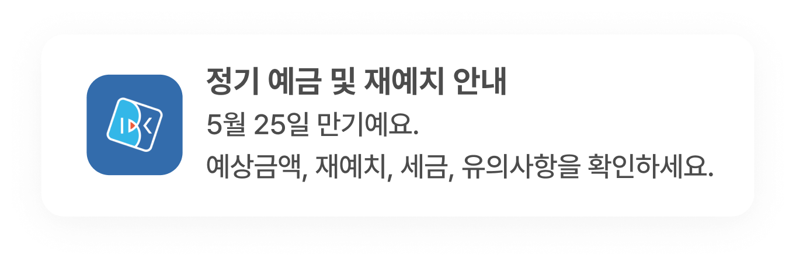
예상금액, 재예치, 세금 등 여러 항목을 나열해
고객이 알림에서 즉시 취해야 할 행동을 파악하기 어려움
핵심 상태(만기일)와 확인해야 할 행동 하나만 남겨
고객이 바로 다음 행동으로 이어질 수 있도록 안내
작성 전 확인 포인트
고객의 상황과 채널 특성에 맞게 구성됐나요?
- 고객 유형, 상황, 상품 특성에 맞게 정보량과 톤을 조절했나요?
- 같은 목적의 메시지가 다른 채널에서도 같은 구조와 표현으로 쓰였나요?
- SMS, Push, 알림톡처럼 글자 수가 제한된 채널에는 핵심만 담았나요?
- 첫 줄만 보고도 메시지의 목적과 받은 이유를 알 수 있나요?
- [1] Kendrick, A. (2018, November 18). Five mistakes in designing mobile push notifications. Nielsen Norman Group. https://www.nngroup.com/articles/push-notification/
- [2] Liu, F. (2024, February 7). Transactional notification 101 [Video]. Nielsen Norman Group. https://www.nngroup.com/videos/transactional-notification/
- [3] Nielsen, J. (1994, April 24). 10 usability heuristics for user interface design. Nielsen Norman Group. https://www.nngroup.com/articles/ten-usability-heuristics/
- [4] Nielsen, J. (2006, December 3). Progressive disclosure. Nielsen Norman Group. https://www.nngroup.com/articles/progressive-disclosure/
- [5] Shneiderman, B., Plaisant, C., Cohen, M., Jacobs, S., Elmqvist, N., & Diakopoulos, N. (2016). Designing the user interface: Strategies for effective human-computer interaction (6th ed.). Pearson.
- [6] Sweller, J. (1988). Cognitive load during problem solving: Effects on learning. Cognitive Science, 12(2), 257–285. https://doi.org/10.1207/s15516709cog1202_4